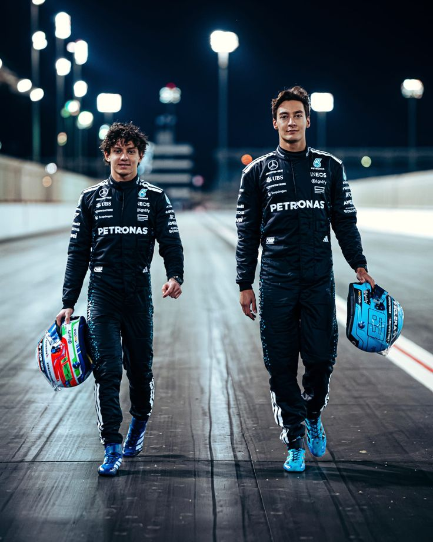
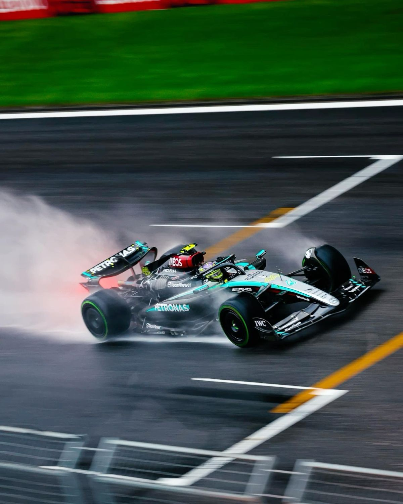
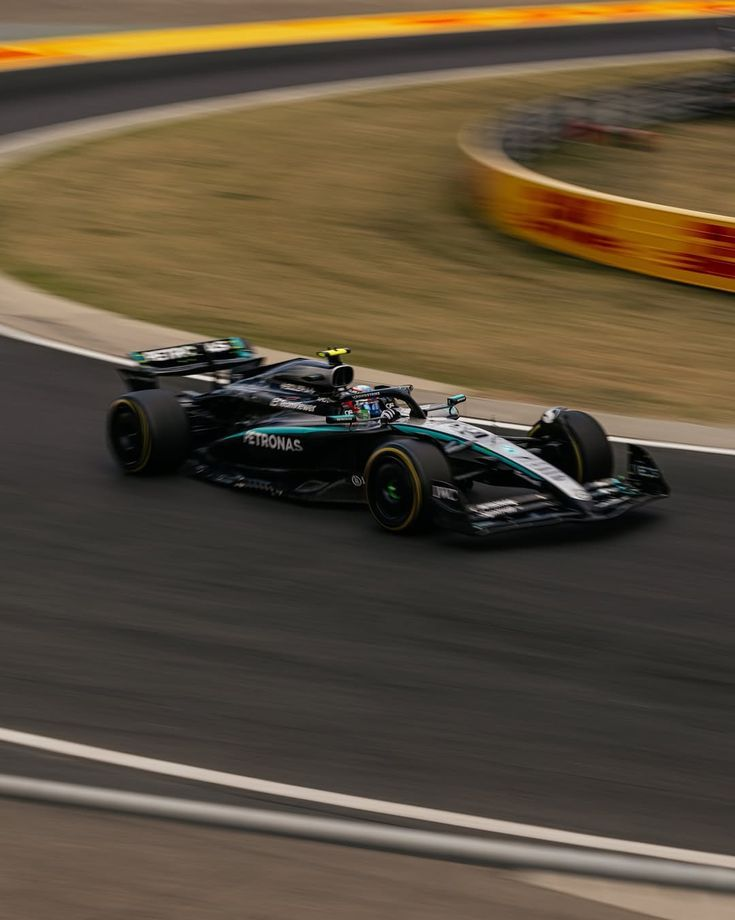
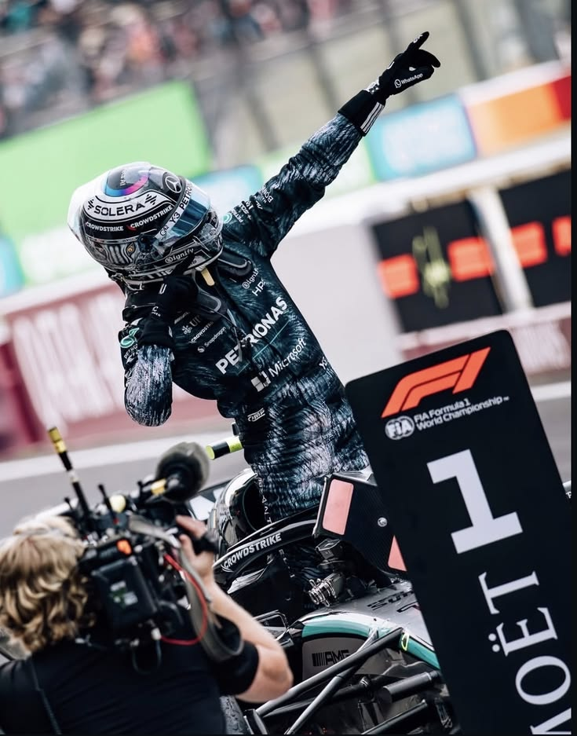
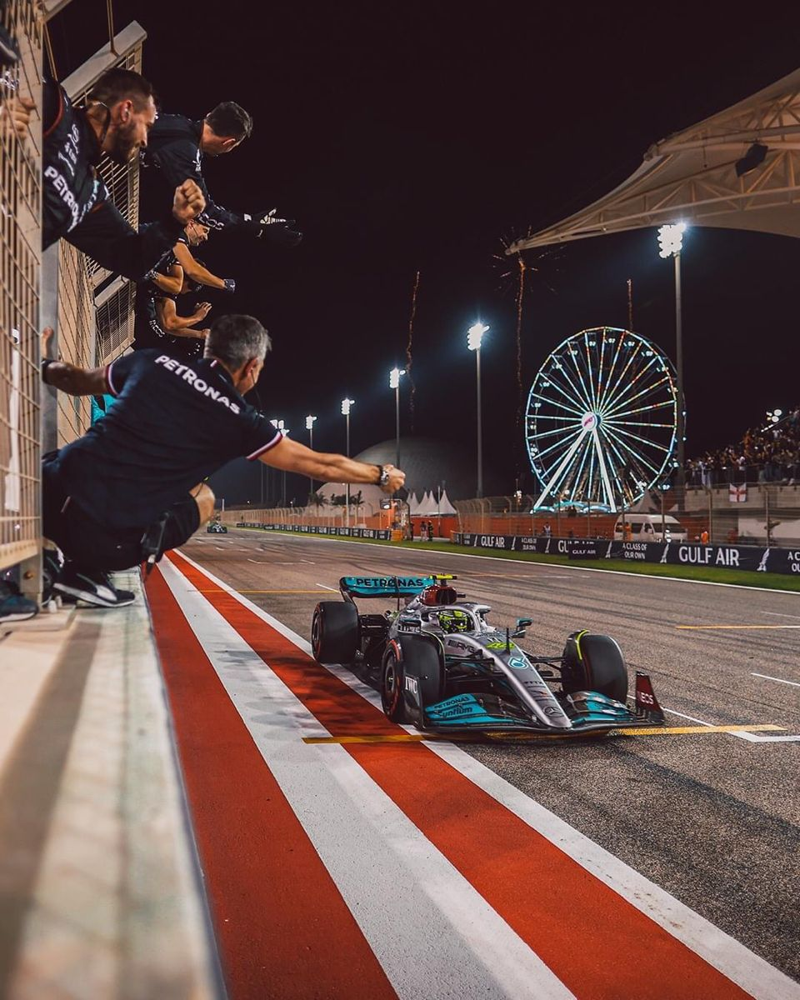
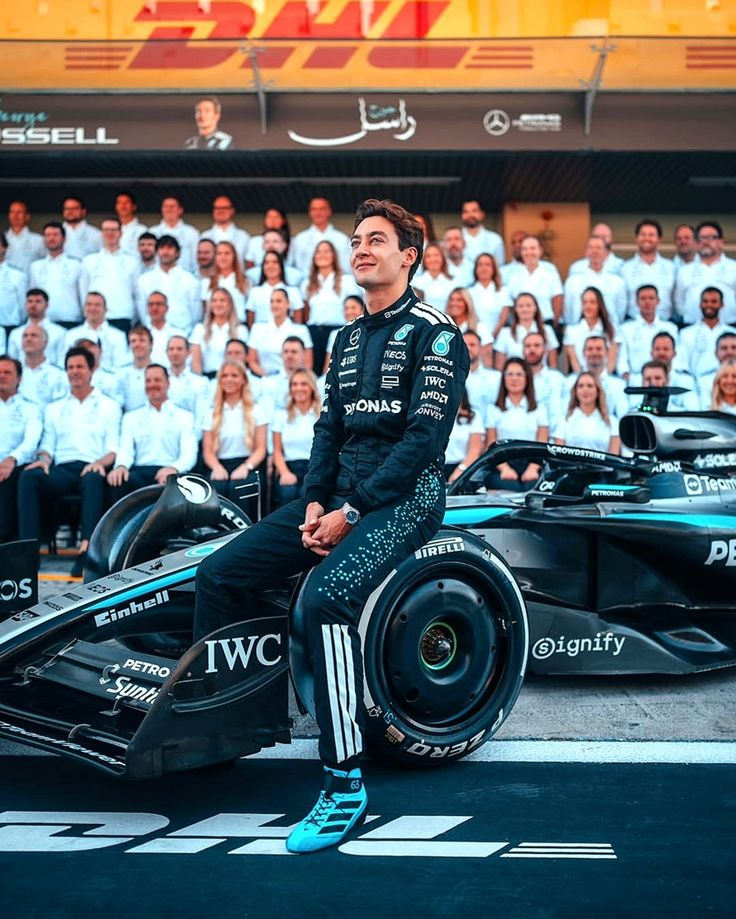
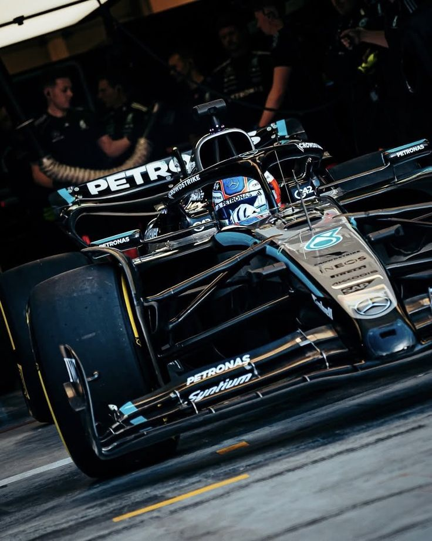

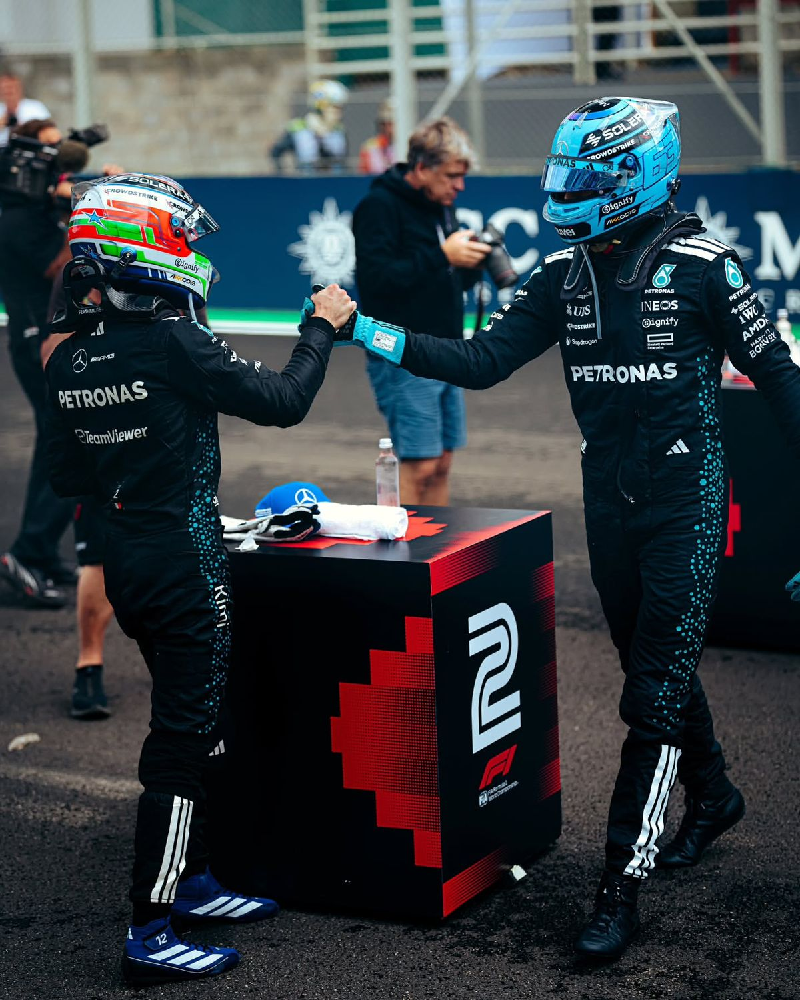
A Mercedes-Benz 1954-ben lépett be először a Formula–1 világába gyári csapatként, és azonnal példátlan sikereket ért el. Juan Manuel Fangio vezetésével már az első szezonban megszerezték a világbajnoki címet, majd 1955-ben megismételték ezt a teljesítményt. A korszak legendás W196 versenygépe olyan technológiai fölényt biztosított, amely hamar meghatározóvá tette a márkát a sportágban.
A Mercedes az 1950-es évek sikerei után hosszú időre kivonult a Forma–1-ből, majd a ’90-es években tért vissza motorpartnerként. A McLaren–Mercedes együttműködés gyorsan sikereket hozott: Mika Häkkinen 1998-ban és 1999-ben világbajnoki címet szerzett, míg Lewis Hamilton 2008-ban lett világbajnok Mercedes-erőforrással.
2010-ben a Mercedes felvásárolta a friss világbajnok Brawn GP-t, ezzel megteremtve modern gyári csapatának alapjait. Ross Brawn irányítása alatt a csapat teljes szerkezete átalakult, megkezdve a későbbi sikerkorszak felépítését.
A 2014-ben bevezetett V6 turbó-hibrid szabályrendszer a Mercedes példátlan előnyét hozta el. A csapat hét egymást követő konstruktőri és versenyzői címet szerzett, Lewis Hamilton pedig a korszak meghatározó alakjává vált. A technikai innovációk és az erőforrás fejlettsége egyértelműen a csúcsra emelte a csapatot.
A 2022-es aerodinamikai szabályváltozások új korszakot hoztak, ahol a Mercedes már nem tudta tartani korábbi dominanciáját. A Red Bull átvette a vezetést, a Mercedes pedig több szezonon át dolgozott egy stabil és versenyképes koncepció kiépítésén.
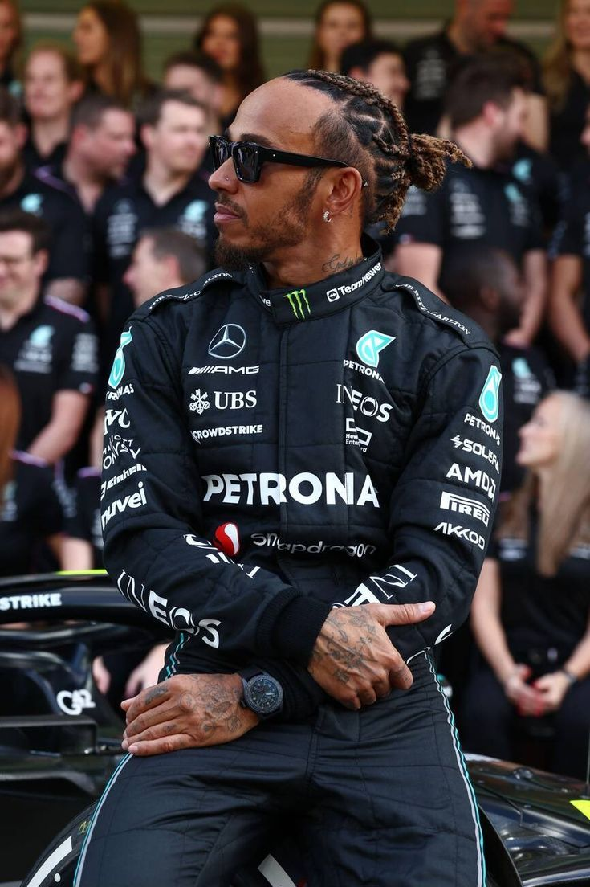
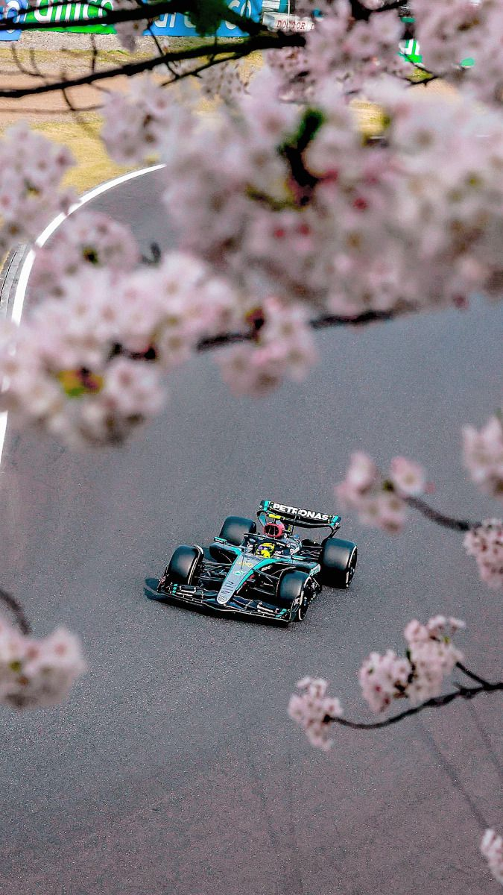
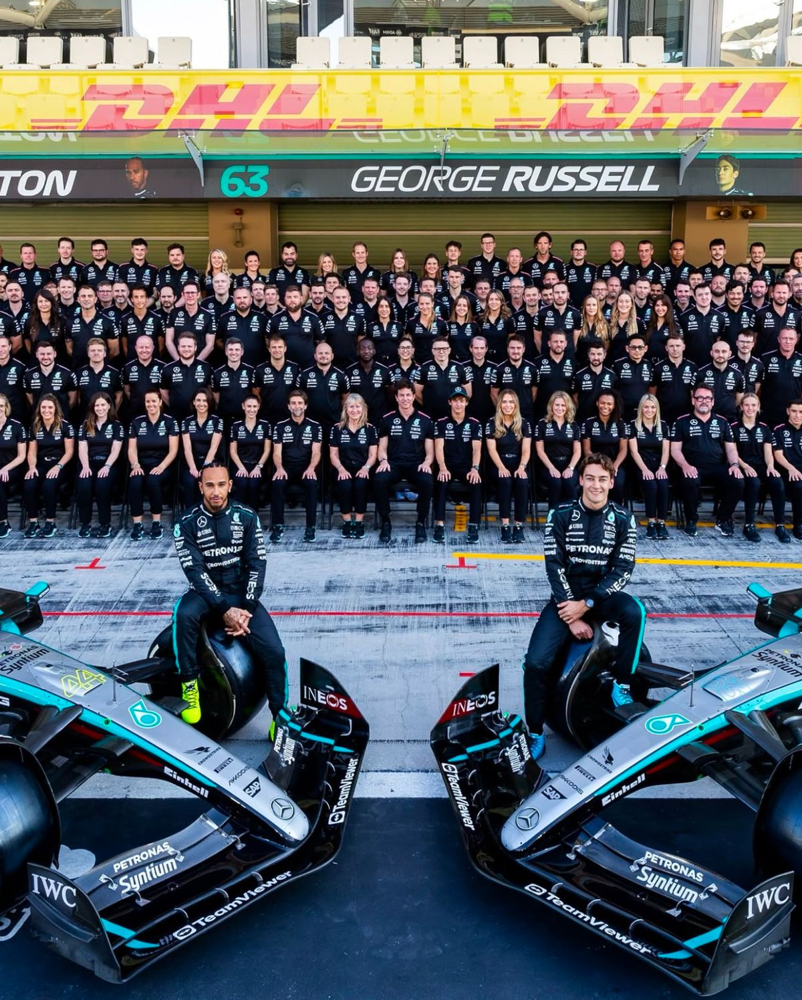
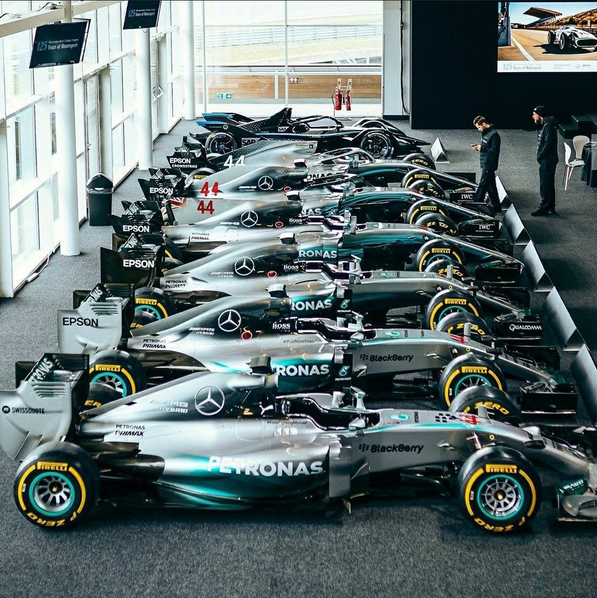
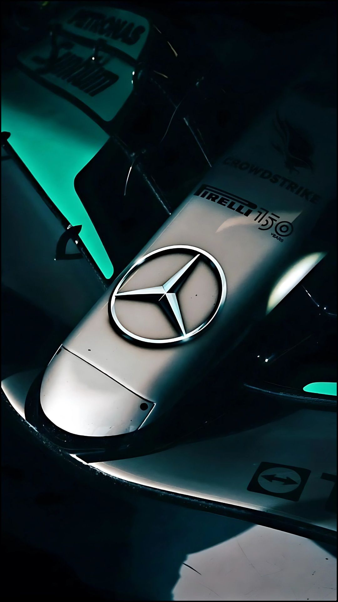
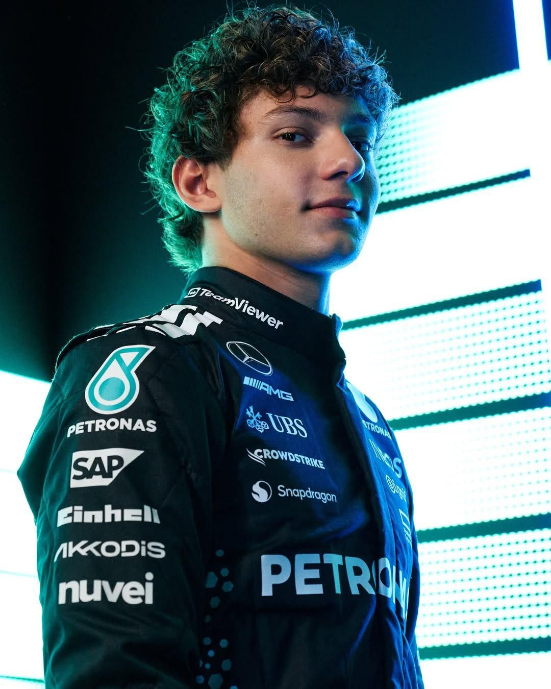
2026-ban teljesen új technikai szabályrendszer lépett életbe, amely radikálisan átalakította a sportot. A Mercedes bemutatta a W17 E Performance modellt, amely aktív aerodinamikával, kisebb kasztnival és közel 50%-os elektromos teljesítményaránnyal tért vissza a mezőny élére.
A Mercedes 2026-ban kettős győzelemmel nyitott Ausztráliában, majd sorozatos erős teljesítményt nyújtott. Russell és Antonelli dominálták az időmérőket és a futamokat, miközben a csapat minden hétvégén az élmezőnyben volt.
Kimi Antonelli történelmi győzelmet aratott Sanghajban, ezzel minden idők második legfiatalabb futamgyőztese lett. George Russell ezzel párhuzamosan stabilan a bajnoki küzdelem élvonalában maradt, egészséges rivalizálást hozva a csapaton belül.
A csapat stratégiájának alapja a domináns egykörös tempó, a tiszta levegőben való versenyzés előnye és a kiemelkedő gumikezelés. A McLaren elemzése szerint a Mercedes előnye egyes pályákon akár 0,5–1 másodperc is lehet körönként.
Bár a Mercedes erős, a 2026-os szezon elején felmerültek kisebb megbízhatósági problémák. Russell szerint az új erőforrás időnként instabilitást mutatott, ám a csapat folyamatos fejlesztéssel igyekszik ezeket kiküszöbölni.
A Japán Nagydíj előtt a Mercedes minden futamon esélyes volt a kettős győzelemre. A csapat formája sokakat a hibridkorszak csúcspontjára emlékeztetett, miközben a pilóták teljesítménye tovább erősítette az istálló pozícióját.
A Mercedes 2026-ban ismét a sport egyik legmeghatározóbb erőssége. A technikai innovációk, a fiatal és gyors pilótapáros, valamint a stratégiai kiválóság biztosítja, hogy a csapat tartósan a csúcson maradjon.








1. Mikor lépett be először a Mercedes a Forma–1-be gyári csapatként?
2. Ki vezette a Mercedest az első világbajnoki címeihez az 1950-es években?
3. Melyik csapatot vásárolta fel a Mercedes 2010-ben?
4. Milyen korszakban volt a Mercedes különösen domináns 2014 és 2020 között?
5. Kik a Mercedes pilótái a 2026-os szezonban?